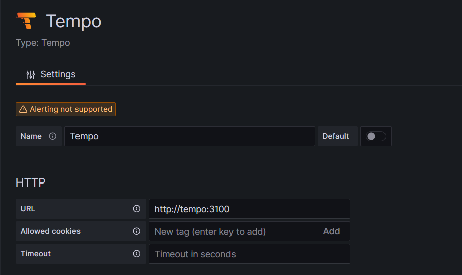
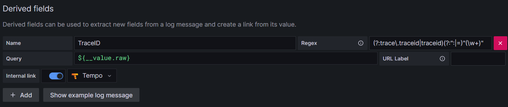
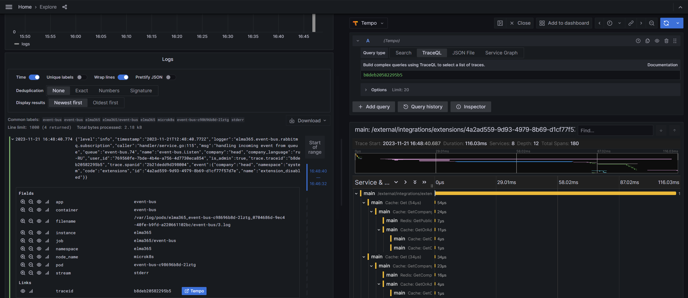

Tempo is a high-performance and scalable system for storing and analyzing traces. It provides complete visibility into interactions between components of distributed systems. Tempo eliminates the complexities associated with storing and retrieving traces from numerous sources in real-time.
Beforehand, install the monitoring tools.
The installation of Tempo consists of five steps:
- Download the Helm chart and the configuration file.
- Create buckets in Minio.
- Fill in the configuration file.
- Install the Tempo chart using Helm in the Kubernetes cluster.
- Configure the connection to Tempo in Grafana data sources.
Начало внимание
When installing Loki + Tempo, start with the Loki addon. This allows preserving cross-linking settings, as they are initially configured in the Datasource settings.
Конец внимание
Step 1: Download the Helm chart and the configuration file
To install via the internet, obtain the configuration file values-tempo.yaml by executing the command:
helm repo add elma365 https://charts.elma365.tech
helm repo update
helm show values elma365/tempo > values-tempo.yaml
Getting configuration file for installation in a closed environment without internet access
helm repo add elma365 https://charts.elma365.tech
tar -xf tempo-X.Y.Z.tgz |
Step 2: Create buckets in Minio
1. Create alias for MinIO:
mc alias set my_alias http://minio.local accessKey secretKey
2. Create a bucket with the name tempo:
mc mb -p my_alias/tempo --region=ru-central-1
Step 3: Fill in the configuration file
Fill in the configuration file for Tempo installation
|
tempo: Where the repository format is: address — |
Step 4: Install the Tempo chart using Helm in the Kubernetes cluster
Install Tempo chart in namespace monitoring.
For online installation:
helm upgrade --install -n monitoring tempo elma365/tempo -f values-tempo.yaml
For offline installation without internet access, navigate to the directory with the downloaded chart and execute:
helm upgrade --install tempo ./tempo -f values-tempo.yaml -n monitoring
Step 5: Configure the connection to Tempo in Grafana data sources
The Tempo data source is added during installation. Verify it using the path: Home > Administration > Data source > Tempo.
URL: http://tempo:3100

For convenient viewing, a cross-link to Tempo is added to the Loki data source.
(Query: ${__value.raw}; Regex: (?:trace\.traceid|traceid)(?:":|=)"(\w+)")

Configuring Derived Fields will facilitate viewing of the trace's reference connection in Tempo.

Found a typo? Select it and press Ctrl+Enter to send us feedback